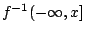
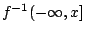

Résumés des cours et exposés
Journées de Géométrie Algorithmique 2005
24-28 janvier 2005
Saint-Pierre de Chartreuse
Résumés des cours
Combinatoire de la théorie des noeuds et des tresses
Christian Blanchet
La théorie mathématique des noeuds et tresses
a connu ces vingt dernières
années un développement très important.
La découverte du fameux polynôme de Jones a joué un rôle
déterminant dans cet essor, en mettant en évidence
la relation avec la théorie quantique des champs, et au delà
avec de nombreux domaines
mathématiques ou physiques (groupes quantiques,
théorie conforme des champs ...). La théorie compte en outre
d'intéressantes applications,
par exemple à l'étude de l'ADN et à la cryptographie.
Le cours comportera deux parties :
Dans le premier exposé, nous exposerons les bases de cette théorie:
noeuds polygonaux, isotopie, mouvements de Reidemeister,
groupes de tresses, clôture d'une tresse, mouvements de Markov.
Dans le second exposé, nous présenterons des exemples de problèmes
de nature combinatoire, et quelques résultats permettant de se faire
une idée des questions algorithmiques sous-jacentes.
Fonctions distances
Frédéric Chazal
A tout sous-ensemble fermé F d'un espace euclidien ou d'une variété
riemannienne, on peut associer
une fonction distance à F définie par dF(x) = inf{y in F} d(x,y).
De telles fonctions (distance à un point, distance à un nuage de point,
distance au bord d'un "objet",...)
interviennent naturellement dans de nombreux problèmes de géométrie appliquée
et riemannienne.
En général, ces fonctions et leurs hypersurfaces de niveau ne sont pas
différentiables et il n'est donc pas
possible de les étudier à l'aide des outils usuels de géométrie
différentielle.
Elles possèdent cependant de nombreuses propriétés semblables à celles des
fonctions différentiables
(notion de point singulier, lemme d'isotopie, théorème de Sard, etc...) qui
ont été utilisées avec succès
par divers auteurs (Grove-Shiohama, Cheeger,...) pour établir des liens entre
la géométrie et la topologie
des variétés riemanniennes.
Ce cours comportera deux parties.
Dans la première, on présentera les propriétés mathématiques remarquables des
fonctions distances.
Dans la seconde, nous montrerons sur quelques exemples comment de telles
propriétés peuvent être utilisées
pour obtenir des résultats d'approximation et de stabilité topologique utile
en géométrie appliquée.
Cette seconde partie établira un lien avec le cours de David Cohen-Steiner sur
la persistance topologique.
Références :
[1] F. Chazal, A. Lieutier, Weak Feature size and persistent homology:
computing homology of solids in R^n from
noisy data samples, preprint IMB 378 ps
or pdf.
[2] J. Cheeger, Critical Points of Distance Functions and Applications to
Geometry, Geometric Topology: recent
developments, Montecatini Terme, 1990, Springer Lecture Notes, 1504 (1991),
1-38.
[3] K. Grove, Critical Point Theory for Distance Functions, Proc. of Symposia
in Pure Math., vol. 54, 1993.
Espaces métriques discrets
Victor Chepoi
Les espaces métriques discrets sont apparus dans les dernières années
comme une nouvelle
branche des mathématiques discrètes ayant des liens profonds et des
applications surprenantes
en Informatique Théorique. Les questions de ce domaine constituent un
mélange séduisant de
combinatoire et de géométrie avec de nombreuses connexions à
l'algorithmique. Dans ce cours,
nous présenterons des résultats classiques et récents de la théorie
des espaces métriques discrets.
Le cours comportera trois parties :
(i) Structures, décomposition, plongements des espaces
métriques. Classes principales des espaces métriques finis.
(ii) Plongements à faible distortion dans des espaces normés et des
produits d'arbres. Applications algorithmiques.
(iii) Métrique des graphes.
Références :
[1] H.-J. Bandelt, V. Chepoi, Metric graph theory and geometry: a survey
[2] M.M. Deza, M. Laurent, Geometry of cuts and metrics, Springer-Verlag, Berlin, 1997
[3] J. Matousek, P. Indyk, Low-distortion embeddings of finite metric
spaces, Handbook of Discrete and Computational Geometry
Mineurs de graphes et analyse
Yves Colin de Verdière
la relation d'ordre de mineur sur les graphes finis
jouit de propriétés remarquables étudiées récemment en particulier
par Robertson, Seymour et d'autres (ex-conjecture de Wagner).
Il est naturel de munir les arêtes d'un graphe de poids représentant
suivant les contextes des paramètres issus
de modélisations comme des longueurs ou des résistances électriques.
Il est alors clair que l'on peut faire dégénérer les graphes
en faisant tendre certains de ces paramètres vers 0 ou l'infini.
On obtient ainsi une interprétation topologique de la notion de
mineur. Pour certaines applications (théorie spectrale par exemple),
il est judicieux d'introduire des structures différentiables,
en fait des stratifications.
De façon plus précise, j'étudierai les opérateurs de type Schrödinger
sur les graphes et montrerai comment un tel ensemble d'opérateurs
admet une compactification naturelle contenant comme strates les opérateurs
de type Schrödinger sur les mineurs du graphe donné.
Je montrerai ensuite comment en déduire des invariants numériques
des graphes monotones pour la relation de mineurs.
Le cours comportera trois parties d'une heure chacune.
Exposé 1 : perturbations singulières de valeurs propres de matrices
symétriques et Gamma-convergence.
Exposé 2 : la relation de mineur revisitée par les analystes :
la stratification des opérateurs de Schrödinger
Exposé 3 : invariants spectraux et topologie.
Références:
[1] yCdV, spectre de graphes, collection cours spécialisés
de la SMF (1998)
[2] yCdV, exposé aux journées X-UPS 2004
(Sur le
spectre des opérateurs de type Schrödinger sur les graphes)
Persistance topologique
David Cohen-Steiner
La persistance topologique, introduite par H. Edelsbrunner,
D. Letscher et A. Zomorodian en 2000, est un moyen de distinguer le
"signal" du "bruit" dans une fonction réelle  définie sur
un espace topologique. L'idée de la persistance est d'analyser
l'évolution de la topologie des sous-ensembles de niveau
 de , lorsque le seuil
définie sur
un espace topologique. L'idée de la persistance est d'analyser
l'évolution de la topologie des sous-ensembles de niveau
 de , lorsque le seuil  augmente. Il se
trouve que cette évolution peut être représentée sous la
forme d'un ensemble d'intervalles, appelés intervalles de
persistance. Chacun de ces intervalles correspond à la "durée de
vie" d'un événement topologique dans l'évolution des
sous-ensembles de niveau de . Une propriété importante de la
persistance est sa stabilité vis-à-vis des perturbations. Ainsi,
ajouter un bruit de faible amplitude à une fonction réelle aura
pour effet d'introduire ou de supprimer des intervalles courts, sans
trop modifier les intervalles longs. Les intervalles longs peuvent
donc être considérés comme relevant du signal et non du bruit.
augmente. Il se
trouve que cette évolution peut être représentée sous la
forme d'un ensemble d'intervalles, appelés intervalles de
persistance. Chacun de ces intervalles correspond à la "durée de
vie" d'un événement topologique dans l'évolution des
sous-ensembles de niveau de . Une propriété importante de la
persistance est sa stabilité vis-à-vis des perturbations. Ainsi,
ajouter un bruit de faible amplitude à une fonction réelle aura
pour effet d'introduire ou de supprimer des intervalles courts, sans
trop modifier les intervalles longs. Les intervalles longs peuvent
donc être considérés comme relevant du signal et non du bruit.
La première partie de ce cours sera consacrée à la définition
de la persistance topologique. Puis je donnerai un algorithme simple
permettant de calculer les intervalles de persistance d'une fonction
linéaire par morceaux définie sur un complexe simplicial. Enfin,
je décrirai quelques applications géométriques de la
propriété de stabilité de la persistance.
Some Problems in Biogeometry: Optimal Packings of Tubes, Ideal Knot Shapes, Biarcs and the Global Radius of Curvature
John Maddocks
In these three talks I will describe three ideas all pertaining to the
analysis and computation of optimal packings of cylindrical tubes
centred on arbitrary space curves. While I will not mention the
specific applications in any detail, the problem of cylindrical tubes, or
fattened lines, arises in a variety of biological contexts, for example
packing of DNA into the capsid head of bacteriophages, and the helical
form of many bacteria and other simple organisms.
The first idea is that of global radius of curvature, which is a
method of characterizing the normal injectivity radius (or informally
thickness) of a given space curve.
The second idea is that of biarcs, which are a way of approximating
arbitrary space curves with arcs of circles. The biarc discretization
combines very well with the approach of global radius of curvature in the
computation of thickness.
The third idea is the specific optimal packing problem of ideal knot
shapes. Here I will explain the problem, and then show approximately ideal
shapes of trefoil and figure-eight knots that were computed via a Monte
Carlo code that exploits global radius of curvature and the biarc
discretization.
Références:
The material of the three talks is described at length in the thesis,
Global Radii of Curvature, and the Biarc Approximation of Space Curves:
In Pursuit of Ideal Knot Shapes, by Jana Smutny
which is available in pdf as Thesis number 7 on:
http://lcvmwww.epfl.ch/publis.html
and in the articles (also available electronically from the same page):
[82] M. Carlen, B. Laurie, J.H. Maddocks, J. Smutny,
"Biarcs, Global Radius of Curvature, and the Computation of Ideal Knot
Shapes", Chapter in "Physical and Numerical Models in Knot Theory and
Their Application to the Life Sciences",
Eds. J. Calvo, K. Millett, E. Rawdon, and A. Stasiak,
To be published by World Scientific.
(A condensed version of Chapters 4, 7 and 8 of the thesis [7])
[65] O. Gonzalez, J.H. Maddocks, J. Smutny,
"Curves, circles, and spheres", Contemporary Mathematics 304 (2002)
195-215. (The original version of Chapter 3 of the thesis [7])
[61] O. Gonzalez, J.H. Maddocks, F. Schuricht, H. von der Mosel, "Global
curvature and self-contact of nonlinearly elastic curves and rods",
Calculus of Variations 14 (2002) 29-68.
(A rather technical article showing how global radius of curvature can be
used to prove the existence and minimal regularity of various optimal
packing problems, including ideal knot shapes.)
[57] A. Stasiak, J. H. Maddocks, "Best packing in proteins and DNA",
Nature 406, July (2000) 251-252. ( A discussion of an article by Maritan
et al that uses global radius of curvature in optimal packing and relates
to the crystal structures of various molecular helices.)
[43] O. Gonzalez, J.H. Maddocks, "Global Curvature, Thickness and the
Ideal Shapes of Knots", Proc. National Academy of Sciences of the USA 96
(1999) 4769-4773. (The original article on global radius of curvature, as
motivated by ideal knot shapes.)
Algorithmique du calcul de l'homologie des ensembles semi-algébriques
Marie-Françoise Roy
Les deux grandes méthodes permettant de
calculer l'homologie des ensembles semi-algébriques seront présentées:
la méthode de décomposition cylindrique et la méthode des points
critiques. La première est très générale et a une complexité
doublement exponentielle dans le nombre de variables, la second donne
des résultats simplement exponentiels dans un certain nombre de cas
spécifiques (résultats récents de Basu Pollack Roy et de Basu)
Résumés des exposés
Une méthode d'ordre 2 pour l'estimation
de tangentes
Gudrun Albrecht
La reconstruction de courbes planes à partir de points discrets
néssecite souvent l'estimation de tangentes en ces points. Ce
travail présente une méthode d'estimation de tangentes pour des
données convexes, qui se base sur le théorème de Pascal relatif
aux coniques. Les tangentes sont donc exactes si les points
proviennent d'une conique. Cet algorithme simple et efficace est
comparé, d'abord de façon experimentelle, à des méthodes
classiques d'approximation de tangentes, donnant de meilleurs
résultats. Ensuite, cette meilleure performance est justifiée par
une étude théorique des ordres d'approximation des méthodes
considérées. Il s'agit d'un travail commun avec J.P. Bécar,
G. Farin, et D. Hansford.
Formules d'inclusion-exclusion à partir de
complexes indépendants
Dominique Attali
Nous caractérisons les formules minimales d'inclusion-exclusion
obtenues à partir de complexes simpliciaux et permettant de mesurer
l'aire d'une union de disques dans le plan et plus généralement le
volume d'une union de boules dans Rd. Ces formules sont
décrites par des triangulations ayant des éléments indépendants et le
même espace sous-jacent ainsi que le même complexe frontière que le
complexe dual des boules.
Ce problème a des applications en biochimie où une molécule est
souvent identifiée par la portion de l'espace qu'elle occupe. Cette
portion est communément décrite par une union de boules dans
R3, chaque boule représentant un atome de la
molécule. L'aire et
le volume de cette union interviennent dans le calcul des forces
physiques agissant sur la molécule.
Ces résultats ont été obtenus en collaboration avec H. Edelsbrunner.
Représentation compacte de triangulations
Luca Castelli Aleardi
Nous considérons le problème de représenter de manière
compacte des structures de données géométriques en permettant
une implementation efficace des opérations de navigation.
Pour le cas des triangulations planaires à m faces, nous proposons
une représentation de l'information combinatoire du maillage
qui améliore à 2.175m bits la quantité asymptotique d'éspace utilisé
fournissant une implementation de la navigation et des requêtes d'adjacences
entre triangles en temps constant.
Cette représentation peut s'étendre au cas de surfaces de genre borné et permet
aussi l'accèsaux données géométriques associés à la triangulation.
Taille moyenne de la silhouette d'un polyèdre
Marc Glisse
On considère généralement en graphisme qu'un polyèdre suffisamment
régulier de taille n a une silhouette de taille
sqrt(n). Le but
ici est de formaliser cette affirmation. Le cas des polytopes (convexes)
a été traité dans un article publié à CCCG en 2003. On s'intéresse ici au
cas des polyèdres qui approximent une surface, et à la complexité moyenne
de la silhouette pour une direction d'observation aléatoire.
Théorème de type Helly et droites perçantes
à des sphères congruentes
Xavier Goaoc
Le Théorème de Helly énonce qu'une famille de convexes de
Rd a une
intersection non vide si toute sous-famille de taille d+1 a
une intersection
non vide. Plus généralement, les résultats du type "si toute sous-famille de F
de taille (au plus) k a la propriete P alors F a la propriete Q" sont nommés
"théorèmes de type Helly" et font l'objet de recherches actives en géométrie
combinatoire.
Une droite perçante pour une famille F d'objets de
Rd est une droite qui
intersecte chacun des objets de F. Au cours des dernières décennies, plusieurs
théorèmes de type Helly portant sur l'existence de droites perçantes à des
objets du plan ont été établis. En particulier, Hadwiger a montré en 1957 que
si une famille ordonnée de convexes F est telle que tout triplet admette une
droite perçante compatible avec son ordre alors F admet une droite perçante. En
1958, Grünbaum a conjecturé l'existence d'un résultat analogue sans restriction
sur l'ordre, non pas dans le cas de convexes généraux mais pour les familles de
copies disjointes d'un même convexe. Cette conjecture ne fut établie qu'en 1989
par Tverberg qui montra que le nombre de Helly est en l'occurence 5.
En dimension 3, Holmsen et Matousek ont établi en 2004 qu'il ne peut exister
ni Théorème de type Helly ni Théorème de Hadwiger pour des convexes généraux,
ni mêmes pour des copies disjointes d'un même convexe. Néanmoins, Holmsen et
al. ont montré en 2003 l'existence de tels résultats dans le cas particulier de
sphères disjointes et congruentes, i.e. de même rayon. Ils ont établi que le
nombre de Hadwiger correspondant est au plus 12 et le nombre de Helly au plus
46, les bornes inférieures correspondantes étant respectivement 4 et 5. En
obtenant de nouveaux résultats sur les permutations géométriques de sphères
congruentes, Cheong et al. ont amélioré en 2003 les bornes supérieures sur les
nombres de Hadwiger et de Helly à respectivement 9 et 18.
Je présenterai une nouvelle preuve des Théorèmes de Hadwiger et de Helly pour
droites perçantes à des sphères congruentes. Cette preuve repose sur une étude
des propriétés des ensembles de droites perçant des sphères afin de leur
appliquer la version topologique du Théorème de Helly et montre que le nombre
de Hadwiger est au plus 6 et celui de Helly au plus 11. Ces résultats ont été
obtenus en collaboration avec Otfried Cheong et Andreas Holmsen.
calcul des tangentes communes à deux ellipses
Luc Habert
Dans ce travail, on montre comment calculer les tangentes communes à deux
ellipses. On obtient les coefficients des équations des tangentes comme des
racines de polynômes de degré 4, dont les coefficients sont des polynômes
de degré 8 en les coefficients des ellipses. Pour des ellipses disjointes,
il y a une notion de « type de bitangente » : la bitangente sépare-t-elle
les deux ellipses ou non, et laquelle des deux ellipses rencontre-t-elle en
premier? On montre comment obtenir le type des bitangentes
calculées. Enfin, on montre comment évaluer certains prédicats sur ces
bitangentes, permettant, par exemple, de calculer des graphes de
visibilité. La méthode décrite a été implémentée (en utilisant le package
RootOf de I. Emiris et E. Tsigaridas pour manipuler les
algébriques), et s'est avérée raisonnablement rapide.
preuve que la frontiere (3D) d'une
cellule du complexe de visibilite 3D est
connexe. Application a un algorithme de
construction du complexe de visibilite
Samuel Hornus
La décomposition radiale d'une scène 3D permet de maintenir
simplement la visibilité d'un point de vue qui se ballade. Sur une
scène polygonale, nous pouvons utiliser cette maintenance pour balayer
l'ensemble du 3-squelette du complexe de visibilité, de manière
assez intuitive. Dès lors, le chainon manquant pour construire
complètement le complexe de visibilité 3D et une preuve de la
connexité des frontières 3D des cellules 4D du complexe. Ce que nous
présentons.
Weak Feature Size : peut-on attraper le type
d'homotopie d'un objet a partir d'une
Hausdorff approximation de son bord ?
André Lieutier
Après avoir introduit la notion de weak Feature Size (WFS), qui
généralise la notion de reach ou de lfs, pour des objets non lisses, on
montre que la donnée d'une Hausdorff approximation de la frontière
d'un ouvert borné de Rn, par exemple par un
échantillon fini,
détermine complètement son type d'homotopie. Les techniques utilisées
dans les preuves sont largement basées sur les propriétés de la
fonction distance et du flot induit par son gradient généralisé. Sur
un plan pratique, on donne un algorithme réaliste permettant de
calculer les nombres de Betti a partir d'un échantillon bruité en
utilisant les techniques de "persistent homology". Des resultats un
peu plus faibles mais applicables dans un contexte plus général ont été
obtenus indépendament par D. Cohen-Steiner et H. Edelsbrunner.
Coauteur : F. Chazal
Ordres d'insertion préservant la localité
pour les triangulations de Delaunay
Daniel Loreto
Les triangulations de Delaunay sont l'une des structures de données
essentielles de la géométrie algorithmique. Parmi de nombreux
algorithmes existant, les méthodes incrémentales randomisée sont
populaires pour leur qualités de robustesse et de facilité
d'implantation. Cependant, elles possèdent un défaut important pour le
traitement de données volumineuses. Par essence, elles n'accèdent pas
à la mémoire de façon locale, sollicitant fortement le swap et
devenant inutilisables dès que la mémoire vive est saturée. Nous
prolongeons les résultats d'Amenta, Choi et Rote et présentons une
famille d'ordres d'insertion qui améliorent la localité tout en
garantissant toujours un temps de calcul optimal.
Reconstruction de surfaces par sondage
Steve Oudot
Nous considérons le problème de la reconstruction d'une
surface lisse inconnue, appelée S, qui borde un domaine
O de R3. Le processus de découverte consiste à
déplacer une sonde ponctuelle dans l'espace libre autour de
O, de manière à ce que cette sonde entre en contact avec
S en divers points. Nous proposons une stratégie de sondage
pour générer une série d'échantillons de S, à partir
desquels peut être construite une surface triangulée approchant
S avec n'importe quelle précision. Nous bornons le nombre
d'opérations de sondage ainsi que le nombre de déplacements
élémentaires de la sonde. Notre solution est une extension de
précédents travaux sur les techniques de raffinement de Delaunay
pour le maillage de surfaces. La surface approchante que nous
générons vérifie toutes les propriétés des maillages obtenus
par ces techniques, comme par exemple le bon type de topologie ou
l'approximation des normales.
Drawing One-Bend Grap
Maria Pentcheva
We study compact three-dimensional drawing of graphs whose vertices
lie on a grid and whose edges are non-crossing polygonal segments with
at most one bend lying on the grid. We show that every n-vertex graph
admits such a drawing in a box defined on the grid with
O(n2 sqrt(n) log n) volume. The previous best result,
by P. Morin and D. R. Wood, was in O(n3 /
log2n)
volume.
(Work in collaboration with J. Erickson, H. Everett, S. Lasard and
S. Wismath.)
Points ombilics et lignes d'extrèmes de
courbures sur une surface paramétrée: une
approche avec l'analyse par intervalle
Marc Pouget
Les ombilics sont des points sur une surface pour lesquels les
courbures principales sont égales. Les ridges sont les points pour
lesquels une courbure principale est extrême le long de la ligne de
courbure correspondante. Les ridges forment des lignes passant par les
ombilics. Ces éléments sont des invariants de la surface à isométrie
près et sont utilisés en recalage d'images 3D. L'exposé montrera
comment utiliser les techniques d'analyse par intervalle pour calculer
ces éléments dans le cas d'une surface paramétrée.
Roulements a billes et sables mouvants
secs
Nicolas Rivier
Un empilement granulaire est un roulement a billes si les grains
peuvent rouler sans glisser les uns sur les autres. L'empilement est
alors dynamiquement non frustre, et se comporte comme un fluide sec =
(non-visqueux). Pour cela, il suffit, a 3D, que tous les circuits de
grains en contact soient pairs. Reciproquement, dans un empilement
granulaire quelconque soumis a un cisaillement, les quelques contacts
fermant les circuits impairs vont sauter. Un empilement granulaire se
reduit donc a un graphe muni d'une connection, avec des conditions de
bord particulieres pour imposer le cisaillement. Cette description
rend compte des proprietes surprenantes des milieux granulaires secs,
de la dilatance (Reynolds, vers 1860) aux sables mouvants secs (Lohse
et al. 2004), en passant par la liquefaction et les tremblements de
terre silencieux.
Contraintes d'aire et de volume pour
modèles multirésolution
Basile Sauvage
Nous présentons ici une méthode de déformation multirésolution de
courbes planes fermées avec conservation d'aire. L'objectif est de
fournir un environnement d'édition où l'utilisateur peut, pour
apporter du réalisme, choisir de fixer l'aire délimitée par la
courbe. Il s'agit dans un premier temps de calculer l'aire de la
courbe en base d'ondelettes, puis de l'intégrer dans les déformations,
comme contrainte compatible avec les contraintes linéaires. Nous
explorons en outre le critère de volume pour des surfaces fermées, et
le choix de modèles multirésolution surfaciques appropriés.
Reconstruction de surfaces avec des fonctions
de base radiales centrées sur les pôles
Marie Samozino
La reconstruction de surface à partir d'un ensemble de points est importante
surtout pour de grands ensembles de données bruitées/incomplètes. Représenter
une surface implicitement en utilisant des fonction de base radiales ( Radial
Basis Functions ) est devenue une approche standard, un grand nombre de
fonctions et de méthodes de construction existent déjà. Une méthode
intéressante est de choisir de reconstruire en utilisant le moins possible de
fonctions de base ( un nombre minimum de centres ). L'objectif que l'on s'est
fixé consiste à d'eterminer un "petit" ensemble de centres, les plus appropriés
possibles. Une des idées sur laquelle nous avons travaillé est de placer les
centres le plus pres possible d'un estimation de l'axe m'edian, plus
précisement, sur un sous ensemble des sommets de voronoi, les pôles.
Computing the Topology of Real Algebraic
Surfaces
Jean-Pierre Técourt
We present a new algorithm for computing the topology of compact real
algebraic surfaces even singular surfaces i.e we provide an isotopic
meshing of the surface. Assume S is an algebraic surface defined by
the equation f(x, y, z) = 0 where f in R[x,y,z].
First, we detail algorithms for computing the topology of 2d and 3d
algebraic curves.
After, we detail our algorithm : from the study of the polar variety
for the projection into a generic direction, we compute a whitney
stratification of S and we compute a list of x-values
C for which
the projection onto the x-axis is not a submersion (stratum by
stratum). From Thom's isotopy lemma we deduce that the topology of
the sections can change only for the sections corresponding to the
x-values of C. For each section corresponding to a value of C, we
compute a graph of points isotopic to the section of S. We detail
an algorithm of connection of the graphs of the different sections
according to the polar variety. At last, we explain the isotopic
transformation between S and the triangulation.
Coauteur : Bernard Mourrain
Décomposition de structures de protéines
en volumes élémentaires
Nicolas Wicker
Les protéines sont les briques de base de la cellule, elles
interviennent dans toutes les activités de la cellule et la
détermination de leur structure au moyen de rayons X est centrale
dans la compréhension de leur fonction. Pour comprendre le lien
entre fonction et architecture de manière automatique les études
structurales se focalisent généralement sur l'analyse des
éléments structuraux situés au coeur de la protéine. Dans
une perspective d'analyse des complexes multiprotéiques et de
prédiction des interactions protéine-protéine, notre attention
s'est portée sur l'analyse de leurs surfaces. Afin d'avoir une
étude suffisamment fine des surfaces de protéines nous avions
besoin de partitionner leurs surfaces. Pour cela nous avons introduit
un algorithme permettant de trouver le plus petit
parallélépipède englobant un ensemble de points ainsi qu'une
méthode pour segmenter la structure d'une objet. Des résultats
biologiques seront exposés sur différents protéines à un ou
plusieurs domaines intervenant ou non dans des complexes protéiques.
Diagrammes anisotropes
Camille Wormser
Nous considérons le problème de la construction de diagrammes
anisotropes, sous forme de diagrammes de Voronoï de domaines polygonaux,
en dimension 2 ou 3. L'approche retenue s'appuie sur les définitions
proposées par J.-F. Labelle et J. R. Shewchuk. Nous proposons une approche
par raffinement de maillage, qui se distingue par la simplicité des prédicats
utilisés. Cette méthode fonctionne en dimension 2 et nous présentons
les questions restant en suspens pour la prouver en dimension 3.
Francis Lazarus
Last modified: lun jan 17 21:37:35 CET 2005